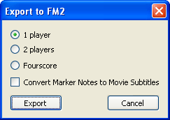
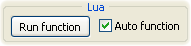

Продвинутые возможности
3. Эффективное использование Маркеров.
1. Как делиться проектами.
Проект Тасэдитора сохраняется на диске в виде fm3-файла. В этом файле сохраняются все существенные аспекты работы, чтобы можно было в точности восстановить отложенное состояние рабочего процесса. Размер этого "мгновенного снимка" может занимать немало места (в зависимости от объёма Гринзоны он может составлять сотни мегабайт).
Поэтому в случаях, когда вам нужно выложить проект в Интернете (например, для опубликования), имеет смысл сохранять в проекте не полный снимок рабочего процесса, а только необходимую информацию. Для этого нужно выбрать в меню Тасэдитора пункт File -> Save Compact. Появится окно, где можно выбрать, какие аспекты рабочего процесса следует сохранить в файл.

Binary format of Input – сохранять Ввод мувика в двоичном формате. Эта настройка относится к особенностям формата fm2, расширением которого является fm3-формат. По умолчанию галочка установлена. Если снять её, Ввод будет записан в fm3-файл в текстовом формате, что увеличит размер файла, но позволит редактировать его в любом текстовом редакторе. Однако Тасэдитор гораздо лучше приспособлен к редактированию мувиков, поэтому рекомендуется оставить эту галочку установленной и воздержаться от изменений содержимого fm3-файлов вне Тасэдитора. В некомпактных fm3-проектах (сохраняемых обычным способом) Ввод сохраняется в двоичном формате.
Markers – сохранять Маркеры в файл. Ввод будет сохраняться в любом случае, так как без Ввода невозможно будет открыть fm3-файлы в эмуляторе. Без Маркеров проигрывание fm3-мувиков возможно, поэтому вы можете снять эту галочку, если не хотите выкладывать Маркеры. Но такие проекты не многим будут отличаться от fm2-мувиков, поэтому рекомендуется оставить эту галочку установленной, чтобы передать в компактном проекте все текущие Маркеры и их Заметки. Размер файла при этом увеличится незначительно.
Bookmarks – сохранять Закладки в файл. Сохраняются данные всех имеющихся в проекте Закладок и их ответвлений. Рекомендуется оставить эту галочку установленной. Размер файла увеличится незначительно.
History – сохранять Журнал Истории в файл. Размер файла увеличится на несколько мегабайт. Обычно нет смысла публиковать данные для отката изменений. Поэтому рекомендуется оставить эту галочку снятой. Когда вы открываете fm3-проект без журнала Истории, Тасэдитор создаёт его автоматически.
Piano Roll – сохранять текущую позицию вертикального скроллинга Piano Roll, чтобы при открытии проекта сразу увидеть тот же самый участок. Размер файла увеличится незначительно, поэтому можно оставить галочку установленной.
Selection – сохранять все данные Выделения в файл. Сохраняется как текущее Выделение (если есть), так и История Выделений. Размер файла увеличится незначительно, однако обычно нет смысла оставлять эти данные в публикуемом проекте. Поэтому рекомендуется оставить эту галочку снятой.
Greenzone saving options – здесь можно выбрать способ сохранения Гринзоны: Именно из-за Гринзоны проекты занимают так много места на диске. Поэтому рекомендуется выбрать частичное сохранение или вовсе не сохранять Гринзону.
В результате компактного сохранения вы можете получить fm3-проект размером менее полумегабайта, при этом передавая в файле не только текущий мувик, но и все существенные данные, которые могут понадобиться получателю. Например, если вы работаете в соавторстве с другим ТАСером, нужно обмениваться не только Вводом, но и Маркерами, и Закладками. А Гринзону получатель файла сможет воссоздать самостоятельно, просто запустив просмотр в Тасэдиторе.
При сохранении компактного проекта к имени файла добавляется суффикс "-compact". Компактное сохранение проекта не заменяет обычное сохранение, поэтому, если в проекте имеются несохранённые изменения, звёздочка из заголовка окна не исчезнет после Save Compact.

Помимо сохранения компактного fm3 вы ещё можете экспортировать данные мувика в формат fm2, принятый на сайте TASVideos задолго до возникновения Тасэдитора. В этом формате вы передаёте только Ввод. Для этого нужно выбрать в меню Тасэдитора пункт File -> Export to FM2. Появится окно, где можно выбрать формат целевого мувика (1P, 2P или Fourscore).
Так как формат FM2 поддерживает хранение текстовых субтитров, можно использовать Заметки Маркеров в качестве материала для субтитров. Для этого нужно установить галочку "Convert Marker Notes to Movie Subtitles". Тогда при просмотре полученного fm2-мувика зрители будут видеть текстовые сообщения, появляющиеся во время проигрывания тех кадров, где стояли соответствующие Маркеры в вашем проекте. А при необходимости можно далее конвертировать fm2-субтитры в общепринятый формат ".srt" для выкладывания ТАСа на Youtube. Для этого надо при проигрывании fm2 в FCEUX щёлкнуть правой кнопкой по игровому окну и в появившемся контекстном меню выбрать пункт "Dump Subtitles to SRT file".
FM2-файлы можно открывать в Тасэдиторе точно так же, как FM3-проекты. Для этого в окне выбора файла (File -> Open) нужно переключиться на фильтр "All Files (*.*)" и выбрать требуемый fm2-мувик. Тасэдитор выдаст сообщение о том, что данный файл не является проектом и потребует подтверждения загрузки. При положительном ответе Тасэдитор создаст новый проект, используя Ввод и настройки из данного fm2-файла.
Кроме того, вы можете импортировать Ввод из любого fm2 или fm3-файла с помощью File -> Import Input. При этом не создаётся новый проект, просто текущий Ввод вашего проекта массово заменяется на Ввод из файла. Эта операция похожа на операцию "Вставка из Буфера Обмена", она заносится в Журнал Истории вашего проекта, и её можно откатить с помощью Ctrl + Z.
2. Использование шаблонов.
При редактировании Ввода ТАСер фактически составляет уникальную последовательность нажатий и отпусканий для каждой кнопки джойстика. Но, несмотря на уникальность, в составе этой большой последовательности зачастую можно выявить однотипные участки, представляющие собой короткую последовательность нажатий и отпусканий, которая повторяется несколько раз подряд, либо встречается многократно в разных местах мувика.
Для ускорения работы можно запомнить такие типичные или часто используемые последовательности в виде шаблонов, чтобы устанавливать их парой щелчков, не рисуя каждое нажатие по отдельности.
Шаблоны полезны в нескольких случаях:
Несколько наиболее очевидных шаблонов уже добавлено в файл автором. Чтобы добавить свой шаблон, нужно отредактировать в любом текстовом редакторе (например, в Блокноте) файл taseditor_patterns.txt, находящийся в подпапке /tools папки FCEUX. Каждая нечётная строчка этого файла обозначает название шаблона, каждая чётная строчка содержит закодированную последовательность состояний кнопки. Кодировка очень простая – единицей обозначается состояние "кнопка нажата", нулём обозначается состояние "кнопка отпущена".
Каждый шаблон является зацикленным, то есть, когда Ввод по короткому шаблону устанавливается в длинный промежуток кадров, шаблон повторяется нужное количество раз, чтобы заполнить требуемый промежуток.

При добавлении или изменении шаблона необходимо перезапустить Тасэдитор, чтобы новые данные были прочитаны из файла. Список доступных шаблонов находится в верхнем правом углу окна TAS Editor. Для смены текущего шаблона нужно зайти в это меню и щёлкнуть по названию желаемого шаблона. Для облегчения ориентирования в шаблонах рекомендуется отражать в названии каждого шаблона его игровое значение.
Для применения текущего шаблона Тасэдитору нужно знать начало и конец промежутка, в котором указанная кнопка будет нажиматься и отпускаться по заданному правилу. Существует 3 разных способа применить шаблон:
1 способ. Указать и щёлкнуть по начальному кадру (в любой колонке Piano Roll, кроме колонки иконок), чтобы этот кадр стал выделенным. Затем зажать клавишу Alt и щёлкнуть по конечному кадру в колонке редактируемой кнопки. В промежутке между двумя этими кадрами появится требуемая последовательность нажатий и отпусканий указанной кнопки. Этот способ удобно использовать, когда начальный кадр уже и так выделен из-за предыдущих щелчков по Piano Roll, и остаётся только зажать Alt и сделать один щелчок по конечному кадру.
2 способ. Щёлкнуть левой кнопкой мыши по начальному кадру в колонке редактируемой кнопки и зажать левую кнопку мыши, начав рисование. Зажать клавишу Alt и переместить курсор мыши вверх или вниз. Таким образом вы будете рисовать шаблонную последовательность нажатий и отпусканий указанной кнопки.
3 способ. Выделить регион кадров, а затем зажать клавишу Alt и щёлкнуть левой кнопкой мыши по символу редактируемой кнопки в Заголовке Piano Roll. В выделенной области появится требуемая последовательность нажатий и отпусканий указанной кнопки.
При использовании традиционного метода ТАСинга вы также можете применять шаблоны к записываемым последовательностям, но с гораздо меньшим удобством. Для этого нужно установить галочку Use pattern в панели Рекордера. При этом вам может сначала потребоваться запись кнопок, которые не нужно чередовать (их следует записать без галочки Use pattern), а затем на том же участке с помощью Superimpose можно записать остальные кнопки по шаблону.
Например, вам нужно записать стрельбу очередью во время перепрыгивания ямы. Сначала запишите процесс перепрыгивания без стрельбы, затем вернитесь Курсором Проигрывателя в начало участка (прыжком на оставленную здесь Закладку), включите галочки Superimpose и Use pattern, зажмите кнопку B и отпустите паузу эмуляции. На текущем участке произойдёт объединение Ввода прыжка с шаблонным Вводом стрельбы.
До Тасэдитора вместо шаблонов существовала похожая концепция "Autofire". Однако из-за неудобств метода Записи она почти не использовалась, потому что во время впечатывания Ввода обычно проще нажимать и отпускать нужные кнопки вручную. Поэтому, если вы ограничиваетесь традиционным методом, вы, скорее всего, не будете пользоваться шаблонами. Однако в нелинейном и полуавтоматическом методе шаблоны рисуются так же быстро, как простые зажатия кнопок, и здесь они действительно могут повысить скорость работы.
Шаблоны используются при создании последовательностей для любой отдельно взятой кнопки. А когда нужно вставить типовую комбинацию сразу нескольких кнопок, следует воспользоваться функциями Copy/Paste.
3. Эффективное использование Маркеров.
Маркеры предназначены для упрощения сложных ситуаций за счёт структуризации проблемы. Когда в игре требуется проделать (или обмозговать) несколько комплексных действий, следует разбить большой участок на отдельные интервалы, чтобы чётко понимать, когда заканчивается одно действие и начинается другое. Даже если первоначальное разбиение окажется ошибочным, оно поможет привести ваши мысли в порядок.
Естественно, не имеет смысла ставить Маркеры на ничем не примечательных участках, многие из которых даже не требуется шлифовать (достаточно, например, просто зажать R). А вот ключевые моменты и памятные ситуации мувика следует не только отмечать Маркерами, но и комментировать Заметками. Это позволит вам держать в голове мысленный образ всего проекта, а также осуществлять навигацию по тексту.
Не требуется писать в Заметках литературные произведения. Можно ограничиться простыми словами-метками, числами, тегами. Слова придумаете на ходу, тут главное – соблюдать системный подход. То есть, если в начале первого уровня (на экране перехода) вы поставили Маркер с Заметкой "level 1 start", то и в начале второго уровня следует написать "level 2 start", а не что-нибудь вроде "act II begin". Во время создания ТАСа у вас в голове непринуждённо формируется уникальный глоссарий, состоящий из понятий, актуальных для данной игры. И чем более системный подход вы применяете к написанию Заметок, тем проще будет охарактеризовать очередной (похожий) участок, а значит, понять очередную задачу. И тем проще будет перемещаться между однотипными событиями мувика, а также находить старые участки Ввода, помня только их смутный образ в игре.
Задачи, предлагаемые игроку в видеоиграх, очень часто повторяются. Детали и антураж могут меняться, но действия игрока остаются примерно теми же. В ряде случаев можно просто скопировать Ввод (решение подобной задачи из предыдущего уровня), и он успешно синхронизируется с новой игровой ситуацией (вероятно, понадобится небольшая подгонка). Только после копипаста рекомендуется всё же разнообразить Ввод, чтобы зрители ТАСа не заметили повторения и не заскучали.
Например, в начале многих уровней Super Mario Bros ТАСеру необходимо использовать одинаковую последовательность нажатий кнопок, чтобы оптимально разогнаться до максимальной скорости. Предположим, что вы добросовестно комментируете Ввод по ходу ТАСинга. Значит, в первом уровне на месте разгона вы, вероятно, оставили Заметку со словами вроде "acceleration" или тому подобными фразами по своему усмотрению. Теперь, когда в новом уровне вы начинаете создавать Ввод для участка с той же самой задачей, вы ставите в начало участка Маркер и пишете к нему Заметку, характеризующую текущую задачу. Очевидно, что в тексте Заметки тоже окажется слово "acceleration", потому что требуется разгон.

И вот здесь уже можно воспользоваться функцией автоматического поиска похожих Заметок. Оставьте Курсор Проигрывателя на текущем участке и нажмите кнопку "Similar" в самом низу панели инструментов. Курсор Выделения сразу же прыгнет к Маркеру, который содержит наиболее похожую Заметку по мнению Тасэдитора. Скорее всего, это будет Маркер в начале участка, отвечающего за разгон в первом уровне. Поэтому вы можете сразу выделить весь Ввод на этом участке, нажав Ctrl + A, скопировать его в Буфер Обмена (Ctrl + C), а затем вернуться к текущему участку (дважды нажать Shift) и вставить из Буфера Обмена (Ctrl + V).
Если первый результат поиска не подходит, можно нажимать кнопку More, чтобы переходить к следующим вариантам похожих Заметок. Обычно нужный участок обнаруживается в числе первых предложенных вариантов, конечно, при условии, что этот участок был отмечен Маркером с разумной Заметкой.
Интересный факт: при написании Заметки к второму разгону слово "acceleration" появляется в тексте не нарочно, а потому что одинаковые игровые ситуации в целом описываются одинаковыми словами. Поэтому запоминать текст старых Заметок совершенно не требуется. В нужное время адекватные слова придут в голову сами.
Таким образом вы прямо в процессе ТАСинга формируете библиотеку полезных комбинаций Ввода, наподобие вышеописанного списка шаблонов, только без необходимости явно заготавливать последовательности кнопок – они появляются естественным путём во время оформления и оптимизации участков, и хранятся они прямо в мувике, а не во внешнем файле. А при улучшении какой-либо комбинации (например, если вы найдёте более быстрый способ осуществлять разгон) можно будет быстро найти и исправить все участки, где используется эта комбинация. Также здесь вам не требуется помнить точное описание или имя нужной последовательности, ведь если вы соблюдаете системный подход к формулировке задач, используемые слова будут частично совпадать (а полное совпадение не требуется, алгоритм автопоиска достаточно умный).
Автопоиск также удобно использовать для прыжков между двумя (и более) взаимосвязанными участками, разнесёнными в мувике достаточно далеко. Скроллировать Piano Roll колесом мыши или прыгать через десятки Маркеров от одного участка к другому будет не столь оперативно, как сделать щелчок по кнопке "Similar" или "More". Чтобы алгоритм мог мгновенно найти участки-близнецы (или участок-источник и участок-приёмник), имеет смысл написать в их Заметках уникальное слово, которое не используется в других местах.
Например, в игре Megaman с каждым робот-мастером необходимо драться дважды (во второй раз в конце игры). Логично предположить, что обе битвы будут озаглавлены Маркерами с Заметками, содержащими имя робота и слова "boss" или "fight", или что-то в этом духе. В результате, когда Курсор Проигрывателя находится на одном из этих двух мест, нажатие кнопки Similar перебросит вас к другому.
В этом примере подходящие слова при написании Заметки нашлись без раздумий, при этом они достаточно уникальны, чтобы не повторяться в других местах мувика (по крайней мере не в том же наборе слов), поэтому автопоиск сработает идеально. В каком-нибудь другом примере, возможно, придётся специально придумывать уникальное слово-метку, но чаще всего будет достаточно первого пришедшего в голову описания происходящей в игре ситуации.

Также может пригодиться стандартный поиск текста в Заметках. Например, полезно в ходе ТАСинга оставлять в некоторых местах Заметку со словом "TODO" – там, где нет уверенности, что найдено окончательное решение задачи (самый оптимальный Ввод на участке). И когда у вас появится настроение провести работу над ошибками, можно будет пройтись по всем Маркерам с этим тегом, вызвав окно "Find Note" (Ctrl + F) и введя слово "TODO" для поиска.
Если вам не нравится вся эта затея с Маркерами, вы вполне можете обойтись без них. В конце концов, большинство игр ставят перед ТАСером довольно простые задачи, которые не требуют высокоорганизованного подхода к процессу решения. Если задачу можно решить с наскока, конечно, не нужно тратить время на подготовку и укрепление позиций. Маркеры дают примущества в долгосрочных целях, а не в краткосрочных.
Поэтому, как и в программировании, в большинстве случаев вы можете успешно писать так называемый "грязный код" (в нашем случае это проект без Маркеров и Заметок), который быстро создаётся, но плохо поддерживается и расширяется. Либо вы можете создавать любовно оформленный проект, который приятно просматривать и модифицировать. Важно понимать, что модифицировать свой мувик в попытках побить вчерашний рекорд ТАСерам приходится очень часто, поэтому затраты сегодняшнего времени на оформление проекта завтра могут окупиться тем, что сам внешний вид проекта мотивирует продолжать над ним работу.
4. Использование Lua.
На языке Lua можно писать скрипты, исполняемые эмулятором FCEUX одновременно с эмуляцией игры. Для написания скриптов требуются минимальные навыки программирования, при этом спектр доступных возможностей чрезвычайно широк. Можно создавать собственные инструменты для ТАСинга, модифицировать игру во время её исполнения, получать доступ к изображению и звуку на лету, передавать данные по сети или записывать на диск и т.д. А также с помощью Lua-скриптов можно писать расширения для Тасэдитора.
Для полного освоения языка Lua потребуется прочесть его документацию и набраться реального опыта, однако для создания простых скриптов будет достаточно чтения этого Руководства и раздела о Lua в Документации FCEUX. Для начала попробуйте запустить чужие скрипты, созданные для FCEUX разными людьми. Они находятся в подпапке /luaScripts. Каждый скрипт представляет собой текстовый файл с расширением .lua, который можно создавать и редактировать в любом текстовом редакторе. Перед запуском скриптов нужно открыть ROM любой игры. Чтобы запустить скрипт, нужно открыть Lua-консоль (File -> Lua -> New Lua Script Window), в появившемся окне нажать кнопку "Browse" и загрузить файл желаемого скрипта, затем нажать кнопку "Run". Если эмулятор при этом стоит на паузе, требуется либо снять паузу, либо нажать Frame Advance, чтобы скрипт начал работать. А саму Lua-консоль можно скрыть, чтобы её окно не загораживало экран.
Программный код в Lua-скриптах для FCEUX обычно делится на две части – одна часть скрипта выполняется сразу в момент запуска скрипта, другая выполняется при наступлении определённых событий эмуляции, таких как окончание эмуляции очередного кадра, загрузка сэйва и т.д.
Та часть кода, которая исполняется в момент запуска скрипта, обычно выполняется однократно (если, конечно, вы не организовали в ней бесконечный цикл). Код выполняется построчно, сверху вниз. Обычно основная задача этой части – инициализировать глобальные переменные и зарегистрировать функции, которые затем будут автоматически запускаться эмулятором FCEUX при наступлении определённых событий.
В большинстве случаев основной код скрипта находится внутри одной функции, которая автоматически выполняется в конце каждого кадра. Например, так может выглядеть код рисования хитбокса Марио для игры SMB:
marioWidth = 16 marioHeight = 32 function everyframe() marioX = memory.readbyte(0x3AD) marioY = memory.readbyte(0xCE) gui.drawbox(marioX, marioY, marioX + marioWidth, marioY + marioHeight) end emu.registerafter(everyframe) |
При активации этого скрипта FCEUX создаст и инициализирует две переменные ("marioWidth" и "marioHeight"), а затем зарегистрирует функцию с названием everyframe() на событие окончания каждого кадра (registerafter). После этого текст в скрипте заканчивается, и скрипт перестаёт выполняться, однако зарегистрированная функция остаётся в памяти эмулятора, и если теперь вы отпустите паузу или начнёте нажимать Frame Advance, после каждого кадра будет запускаться код, находящийся внутри функции everyframe(). Этот код состоит из трёх строк. Первые две создают переменные, отвечающие за координаты хитбокса, и инициализируют их текущими значениями из оперативной памяти (RAM) эмулируемой приставки. Третья строчка рисует графику поверх изображения игры.
Конкретные адреса ячеек оперативной памяти можно взять из публичных источников (например, http://tasvideos.org/GameResources/NES/SuperMarioBros.html) или найти самостоятельно с помощью инструментов Cheat Search или RAM Search, встроенных в FCEUX. В данном случае нам известно, что по адресу 0x3AD в игре хранится координата X Марио, а по адресу 0xCE – координата Y. Поэтому от скрипта требуется только взять их текущие значения и нарисовать прямоугольник на соответствующем месте экрана. Иногда приходится пересчитывать эти значения, чтобы перевести внутриигровые координаты в экранные координаты, но в данном случае они совпадают.
Про стандартные функции readbyte() и drawbox(), а также про другие полезные функции написано в документации эмулятора FCEUX. Там же написано про использование математических выражений, организацию циклов и условий.
Про стандартные функции, доступные только при запущенном Тасэдиторе, написано в Справочнике. Используя все эти знания, можно не только рисовать и выводить надписи поверх экрана приставки, но и контролировать Проигрыватель и Выделение, а главное, изменять Ввод и Маркеры мувика.
Например, вот так может выглядеть код, копирующий Ввод первого джойстика на место второго джойстика:
function doCopy() selection_table = taseditor.getselection() if (selection_table ~= nil) then for i = 1, #selection_table do selected_frame = selection_table[i] joypad1data = taseditor.getinput(selected_frame, 1) taseditor.submitinputchange(selected_frame, 2, joypad1data) end taseditor.applyinputchanges("Copy 1P->2P") end end taseditor.registermanual(doCopy, "Copy 1P to 2P") |
При запуске этого скрипта FCEUX зарегистрирует функцию doCopy() на событие нажатия кнопки "Run function" (registermanual). Теперь при любом нажатии этой кнопки будет запускаться код этой функции, который состоит из девяти строк. Сначала функция получает от Тасэдитора информацию о Выделении, и если оно не пустое (то есть выделен хотя бы один кадр в Piano Roll), то запускается цикл FOR, перебирающий все выделенные кадры по порядку, начиная с первого и заканчивая последним. Для каждого выделенного кадра функция запрашивает у Тасэдитора Ввод первого игрока (и сохраняет в переменную "joypad1data"), затем делает заявку на изменение Ввода второго игрока в этом же кадре. Все заявки накапливаются в памяти Тасэдитора до завершения цикла FOR, после чего они все разом исполняются с помощью вызова applyinputchanges(). В итоге Ввод второго джойстика в выделенных кадрах будет совпадать с Вводом первого джойстика.

Этот весьма простой скрипт уже представляет из себя полезный мини-инструмент, который может пригодиться вам при создании ТАСов с управлением двумя игроками одновременно. После запуска этого скрипта вы во время ТАСинга сможете выделять в Piano Roll ряд кадров и нажимать кнопку "Copy 1P to 2P" (или хоткей "Run Manual Lua function") для синхронизации обоих игроков. Каждый раз, когда в результате действий этого скрипта изменяется Ввод, происходит естественное усечение Гринзоны и добавление записи в Журнал Истории, чтобы при необходимости можно было откатить произведённые скриптом изменения. Таким образом вы получаете полностью интегрированную в Тасэдитор фичу, поведение которой запрограммировали сами.
Хотя вы можете успешно ТАСить и без знания языка Lua, его использование может значительно сэкономить вам время и даже натолкнуть на неочевидные решения при оптимизации Ввода (а точнее, при анализе игрового Вывода).
Очень часто видеоигры скрывают от игрока существенные детали происходящего, и ТАСеру приходится просматривать состояние памяти напрямую, чтобы точно ориентироваться в ситуации и ощущать факторы оптимальности во время шлифовки участков.
Например, во многих играх счётчик жизней босса не показывается на экране. Поэтому, чтобы точно знать данные о нанесении урона, ТАСеру необходимо просматривать числовое значение соответствующей ячейки RAM с помощью инструмента Memory Watch. А когда таких скрытых факторов много (например, несколько таймеров неуязвимости и атак босса, а также особые счётчики самого игрового персонажа), ТАСеру приходится просматривать и анализировать множество ячеек памяти, значения которых колеблются по разнообразным законам. В этом случае большим подспорьем будет визуализация некоторых данных на экране эмулятора. Например, счётчик жизней босса можно изобразить в виде полоски или числа над его головой, причём красным цветом можно акцентировать кадры нанесения урона или ещё какие-нибудь события. В результате вы неплохо разгружаете голову, переходя от формата абстрактных данных, которые требуется расшифровывать, к формату, который сразу доводит основную мысль (например, "удар по боссу сработал", "хорошо/плохо").
Поэтому рекомендуется освоить Lua хотя бы на уровне осмысленной модификации чужих скриптов. За долгое время существования FCEUX было написано и опубликовано множество скриптов, выполняющих самые разные цели, и возможно, вам потребуется только изменить в чужом скрипте адреса ячеек RAM, подстроив его под свою игру. Порой также имеет смысл попросить помощи на форуме TASVideos.
Курс по изучению Тасэдитора подошёл к концу. Если вы внимательно подошли к чтению, теперь вы знаете всё, что требуется для создания ТАСов на уровне TASVideos. Осталось лишь набраться опыта в реальной работе, довести большинство действий до автоматизма, чтобы не чувствовать рутину, а просто получать удовольствие от процесса вооружённого прохождения и исследования видеоигр.
Created with the Personal Edition of HelpNDoc: Single source CHM, PDF, DOC and HTML Help creation